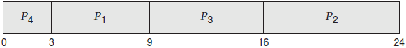
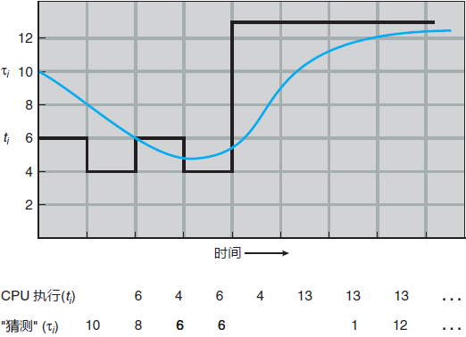
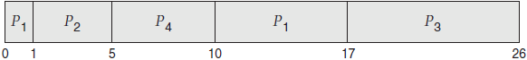
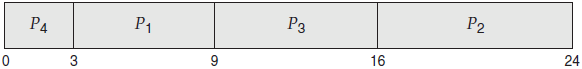
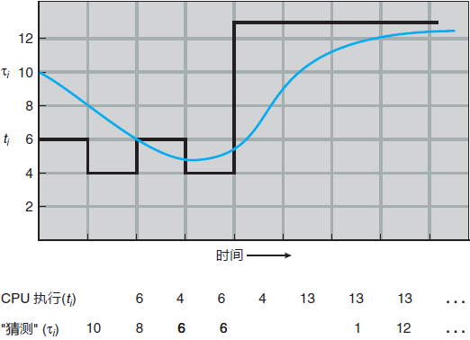
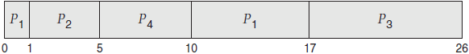

首页 > 编程笔记
最短作业优先（SJF）调度算法（详解版）
最短作业优先（SJF）调度算法将每个进程与其下次 CPU 执行的长度关联起来。当 CPU 变为空闲时，它会被赋给具有最短 CPU 执行的进程。如果两个进程具有同样长度的 CPU 执行，那么可以由 FCFS 来处理。
采用 SJF 调度，就会根据如下 Gantt 图来调度这些进程：

进程 P1 的等待时间是 3ms，进程 P2 的等待时间为 16ms，进程 P3 的等待时间为 9ms，进程 P4 的等待时间为 0ms。因此，平均等待时间为
可以证明 SJF 调度算法是最优的。这是因为对于给定的一组进程，SJF 算法的平均等待时间最小。通过将短进程移到长进程之前，短进程的等待时间减少大于长进程的等待时间增加。因而，平均等待时间减少。
SJF 算法的真正困难是如何知道下次 CPU 执行的长度。对于批处理系统的长期（或作业）调度，可以将用户提交作业时指定的进程时限作为长度。在这种情况下，用户有意精确估计进程时间，因为低值可能意味着更快的响应（过小的值会引起时限超出错误，进而需要重新提交）。SJF 调度经常用于长期调度。
虽然 SJF 算法是最优的，但是它不能在短期CPU 调度级别上加以实现，因为没有办法知道下次 CPU 执行的长度。一种方法是试图近似 SJF 调度。虽然不知道下一个 CPU 执行的长度，但是可以预测它。可以认为下一个 CPU 执行的长度与以前的相似。因此，通过计算下一个 CPU 执行长度的近似值，可以选择具有预测最短 CPU 执行的进程来运行。
下次 CPU 执行通常预测为以前 CPU 执行的测量长度的指数平均。我们可以按下面的公式来计算指数平均。设 tn 为第 n 个 CPU 执行长度，设 τn+1 为下次 CPU 执行预测值。因此，对于 α， 0≤α≤1，定义：

图 1 下一个 CPU 执行长度的预测
为了理解指数平均行为，通过替换 τn，可以展开 τn+1，从而得到：
SJF 算法可以是抢占的或非抢占的。当一个新进程到达就绪队列而以前进程正在执行时，就需要选择了。新进程的下次 CPU 执行，与当前运行进程的尚未完成的 CPU 执行相比，可能还要小。抢占 SJF 算法会抢占当前运行进程，而非抢占 SJF 算法会允许当前运行进程以先完成 CPU 执行。抢占 SJF 调度有时称为最短剩余时间优先调度。
举个例子，假设有以下 4 个进程，其 CPU 执行时间以 ms 计：
如果进程按给定时间到达就绪队列，而且需要给定执行时间，那么产生的抢占 SJF 调度如以下 Gantt 图所示：

进程 P1 在时间 0 开始，因为这时只有进程 P1。进程 P2 在时间 1 到达。进程 P1 剩余时间（7ms）大于进程 P2 需要的时间（4ms），因此进程 P1 被抢占，而进程 P2 被调度。
对于这个例子，平均等待时间为
一个更为恰当的表示是最短下次CPU执行算法，这是因为调度取决于进程的下次 CPU 执行的长度，而不是其总的长度。我们使用 SJF 一词，主要由于大多数教科书和有关人员都这么称呼这种类型的调度策略。
举一个 SJF 调度的例子，假设有如下一组进程，CPU 执行长度以 ms 计：| 进程 | 执行时间 |
|---|---|
| P1 | 6 |
| P2 | 8 |
| P3 | 7 |
| P4 | 3 |
采用 SJF 调度，就会根据如下 Gantt 图来调度这些进程：

（3 + 16 + 9 + 0)/4 = 7ms。相比之下，如果使用 FCFS 调度方案，那么平均等待时间为 10.25ms。可以证明 SJF 调度算法是最优的。这是因为对于给定的一组进程，SJF 算法的平均等待时间最小。通过将短进程移到长进程之前，短进程的等待时间减少大于长进程的等待时间增加。因而，平均等待时间减少。
SJF 算法的真正困难是如何知道下次 CPU 执行的长度。对于批处理系统的长期（或作业）调度，可以将用户提交作业时指定的进程时限作为长度。在这种情况下，用户有意精确估计进程时间，因为低值可能意味着更快的响应（过小的值会引起时限超出错误，进而需要重新提交）。SJF 调度经常用于长期调度。
虽然 SJF 算法是最优的，但是它不能在短期CPU 调度级别上加以实现，因为没有办法知道下次 CPU 执行的长度。一种方法是试图近似 SJF 调度。虽然不知道下一个 CPU 执行的长度，但是可以预测它。可以认为下一个 CPU 执行的长度与以前的相似。因此，通过计算下一个 CPU 执行长度的近似值，可以选择具有预测最短 CPU 执行的进程来运行。
下次 CPU 执行通常预测为以前 CPU 执行的测量长度的指数平均。我们可以按下面的公式来计算指数平均。设 tn 为第 n 个 CPU 执行长度，设 τn+1 为下次 CPU 执行预测值。因此，对于 α， 0≤α≤1，定义：
τn+1 = ατn + (1-α)τn
值 tn 包括最近信息，而 τn 存储了过去历史。参数 α 控制最近和过去历史在预测中的权重：- 如果 α = 0，那么 τn+1 = τn，最近历史没有影响（当前情形为瞬态）；
- 如果 α = 1，那么 τn+1 = tn，只有最近 CPU 执行才重要（过去历史被认为是陈旧的、无关的）。
- 更为常见的是 α = 1/2，这样最近历史和过去历史同样重要。初始值可作为常量或系统的总体平均值。

图 1 下一个 CPU 执行长度的预测
为了理解指数平均行为，通过替换 τn，可以展开 τn+1，从而得到：
τn+1 = αtn + (1-α)αtn-1 + …+ (l-α)jαtn-j + …+ (1-α)n+1τ0
通常，由于 α 和（1-α）小于 1，所以后面项的权重比前面项的权重要小。SJF 算法可以是抢占的或非抢占的。当一个新进程到达就绪队列而以前进程正在执行时，就需要选择了。新进程的下次 CPU 执行，与当前运行进程的尚未完成的 CPU 执行相比，可能还要小。抢占 SJF 算法会抢占当前运行进程，而非抢占 SJF 算法会允许当前运行进程以先完成 CPU 执行。抢占 SJF 调度有时称为最短剩余时间优先调度。
举个例子，假设有以下 4 个进程，其 CPU 执行时间以 ms 计：
| 进程 | 到达时间 | 执行时间 |
|---|---|---|
| P1 | 0 | 8 |
| P2 | 1 | 4 |
| P3 | 2 | 9 |
| P4 | 3 | 5 |
如果进程按给定时间到达就绪队列，而且需要给定执行时间，那么产生的抢占 SJF 调度如以下 Gantt 图所示：

进程 P1 在时间 0 开始，因为这时只有进程 P1。进程 P2 在时间 1 到达。进程 P1 剩余时间（7ms）大于进程 P2 需要的时间（4ms），因此进程 P1 被抢占，而进程 P2 被调度。
对于这个例子，平均等待时间为
[(10-1) + (1-1) + (17-2) + (5-3)]/4 = 26/4 = 6.5ms。如果使用非抢占 SJF 调度，那么平均等待时间为 7.75ms。关注公众号「站长严长生」，在手机上阅读所有教程，随时随地都能学习。内含一款搜索神器，免费下载全网书籍和视频。

微信扫码关注公众号